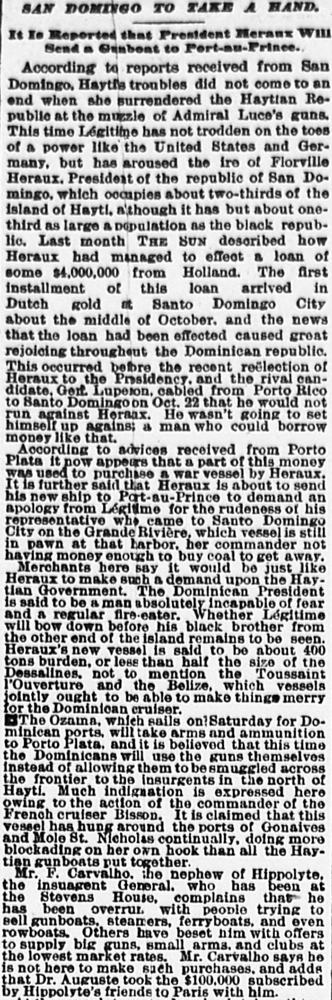

Ho wasn't going to set himself up against: a man whoÉl no iba a ponérsele en contra a un hombre que
The Sun. New York [N.Y.], December 27, 1888. Page 2. Published by Benj. H. Day. A daily newspaper, 1833–1916.The Sun. New York [N.Y.], 27 de diciembre de 1888. Página 2. Publicado por Benj. H. Day. Periódico diario, 1833–1916. View the originalVer el original

According to the newspaper, Dominican President Horaux used borrowed money to purchase a war vessel and planned to send it to Port-au-Prince to demand an apology from Legitime for his representative's rudeness. Additionally, the steamer Ozama was scheduled to depart for Dominican ports carrying arms and ammunition to Porto Plata to be used by the Dominicans themselves.Según el periódico, el mandatario dominicano Heureaux acudió a un empréstito para costear un buque artillero con el propósito de enviarlo a Puerto Príncipe a fin de exigir satisfacciones a Légitime por la descortesía de su delegado. Consignóse además que el vapor Ozama debía zarpar rumbo a radas dominicanas transportando armamento y municiones hacia Puerto Plata para ser empleados por las propias tropas dominicanas.
FULL TEXT:TEXTO COMPLETO:
The Sun December 27, 188827 de diciembre de 1888
SAN DOMINGO TO TAKE A HAND.SANTO DOMINGO TOMARÁ PARTE.
It Is Reported that President Heraux Will Send a Gunboat to Port-au-Prince.Se reporta que el presidente Heraux enviará un cañonero a Puerto Príncipe.
According to reports received from San Domingo, Hayti's troubles did not come to an end when she surrendered the Haytian Republic at the muzzle of Admiral Luce's guns. This time Légitime has not trodden on the toes of a power like the United States and Germany, but has aroused the ire of Florville Heraux, President of the republic of San Domingo, which occupies about two-thirds of the island of Hayti, although it has but about one-third as large a population as the black republic. Last month THE SUN described how Heraux had managed to effect a loan of some $4,000,000 from Holland. The first installment of this loan arrived in Dutch gold at Santo Domingo City about the middle of October, and the news that the loan had been effected caused great rejoicing throughout the Dominican republic. This occurred before the recent reëlection of Heraux to the Presidency, and the rival candidate, Gen. Luperon, cabled from Porto Rico to Santo Domingo on Oct. 22 that he would not run against Heraux. He wasn't going to set himself up against a man who could borrow money like that.Según informes recibidos de Santo Domingo, los problemas de Haití no llegaron a su fin cuando entregó la Haytian Republic a la boca de los cañones del almirante Luce. Esta vez Légitime no ha pisado los dedos de una potencia como los Estados Unidos y Alemania, sino que ha despertado la ira de Florville Heraux, Presidente de la república de Santo Domingo, que ocupa unas dos terceras partes de la isla de Haití, aunque tiene solo cerca de un tercio de la población de la república negra. El mes pasado THE SUN describió cómo Heraux había logrado efectuar un préstamo de unos $4,000,000 de Holanda. La primera entrega de este préstamo llegó en oro holandés a la ciudad de Santo Domingo hacia mediados de octubre, y la noticia de que el préstamo había sido efectuado causó gran regocijo en toda la república dominicana. Esto ocurrió antes de la reciente reelección de Heraux a la Presidencia, y el candidato rival, el general Luperon, cableó desde Puerto Rico a Santo Domingo el 22 de octubre que no correría contra Heraux. No iba a oponerse a un hombre que podía tomar prestado dinero así.
According to advices received from Porto Plata it now appears that a part of this money was used to purchase a war vessel by Heraux. It is further said that Heraux is about to send his new ship to Port-au-Prince to demand an apology from Légitime for the rudeness of his representative who came to Santo Domingo City on the Grande Rivière, which vessel is still in pawn at that harbor, her commander not having money enough to buy coal to get away.Según noticias recibidas de Puerto Plata ahora parece que una parte de este dinero fue usada para comprar un buque de guerra por Heraux. Se dice además que Heraux está a punto de enviar su nuevo buque a Puerto Príncipe para demandar una disculpa de Légitime por la rudeza de su representante que vino a la ciudad de Santo Domingo en el Grande Rivière, cuyo buque todavía está en prenda en ese puerto, su comandante no teniendo dinero suficiente para comprar carbón para irse.
Merchants here say it would be just like Heraux to make such a demand upon the Haytian Government. The Dominican President is said to be a man absolutely incapable of fear and a regular fire-eater. Whether Légitime will bow down before his black brother from the other end of the island remains to be seen. Heraux's new vessel is said to be about 400 tons burden, or less than half the size of the Dessalines, not to mention the Toussaint l'Ouverture and the Belize, which vessels jointly ought to be able to make things merry for the Dominican cruiser.Comerciantes aquí dicen que sería muy propio de Heraux hacer tal demanda al Gobierno haitiano. Se dice que el Presidente dominicano es un hombre absolutamente incapaz de miedo y un come-fuego regular. Si Légitime se inclinará ante su hermano negro del otro extremo de la isla está por verse. Se dice que el nuevo buque de Heraux es de unas 400 toneladas de arqueo, o menos de la mitad del tamaño del Dessalines, por no mencionar el Toussaint l'Ouverture y el Belize, cuyos buques conjuntamente deberían ser capaces de hacer las cosas alegres para el crucero dominicano.
The Ozama, which sails on Saturday for Dominican ports, will take arms and ammunition to Porto Plata, and it is believed that this time the Dominicans will use the guns themselves instead of allowing them to be smuggled across the frontier to the insurgents in the north of Hayti. Much indignation is expressed here owing to the action of the commander of the French cruiser Bisson. It is claimed that this vessel has hung around the ports of Gonaives and Mole St. Nicholas continually, doing more blockading on her own hook than all the Haytian gunboats put together.El Ozama, que zarpa el sábado para puertos dominicanos, llevará armas y municiones a Puerto Plata, y se cree que esta vez los dominicanos usarán las armas ellos mismos en lugar de permitir que sean contrabandeadas a través de la frontera a los insurgentes en el norte de Haití. Mucha indignación se expresa aquí debido a la acción del comandante del crucero francés Bisson. Se reclama que este buque ha estado merodeando los puertos de Gonaives y Mole St. Nicholas continuamente, haciendo más bloqueo por su propia cuenta que todos los cañoneros haitianos juntos.
Mr. F. Carvalho, the nephew of Hippolyte, the insurgent General, who has been at the Stevens House, complains that he has been overrun with people trying to sell gunboats, steamers, ferryboats, and even rowboats. Others have beset him with offers to supply big guns, small arms, and clubs at the lowest market rates. Mr. Carvalho says he is not here to make such purchases, and adds that Dr. Auguste took the $100,000 subscribed by Hippolyte's friends to Paris with him.El Sr. F. Carvalho, el sobrino de Hippolyte, el General insurgente, que ha estado en el Stevens House, se queja de que ha sido abrumado por gente tratando de venderle cañoneros, vapores, ferries, y hasta botes de remos. Otros lo han asediado con ofertas para suministrar cañones grandes, armas pequeñas, y garrotes a los precios más bajos del mercado. El Sr. Carvalho dice que no está aquí para hacer tales compras, y añade que el Dr. Auguste se llevó los $100,000 suscritos por los amigos de Hippolyte a París con él.
[Editor's note: the paper writes of the east as part of Hayti. From 1822 to 1844 the Dominican Republic was held by Haitian military occupation, against its people's will; it restored its independence on February 27, 1844.][Nota del editor: el periódico habla del este como parte de Haití. De 1822 a 1844 la República Dominicana estuvo bajo ocupación militar haitiana, contra la voluntad de su pueblo; restauró su independencia el 27 de febrero de 1844.]